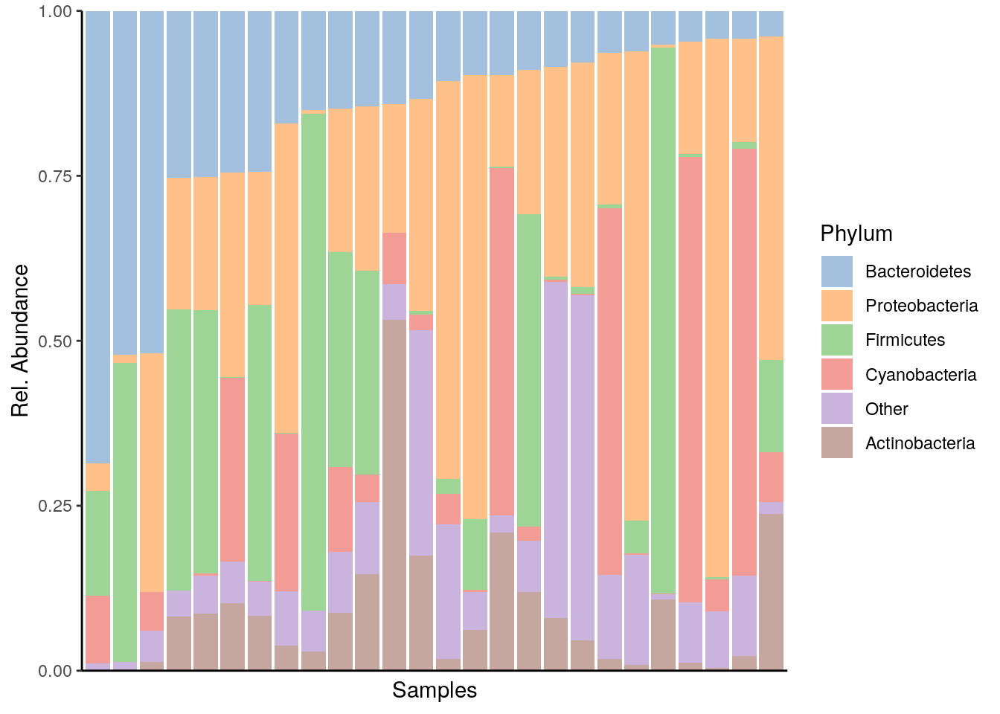
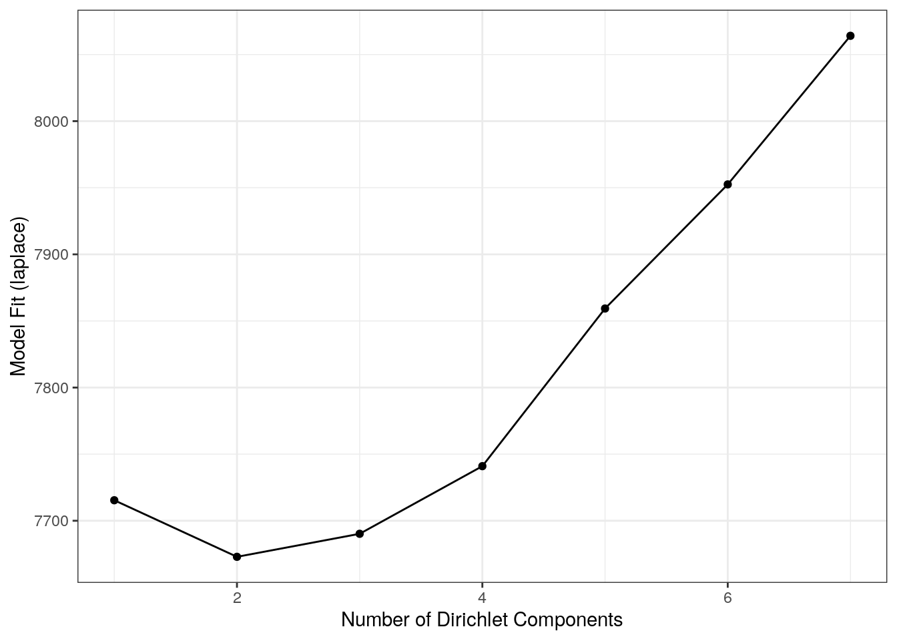
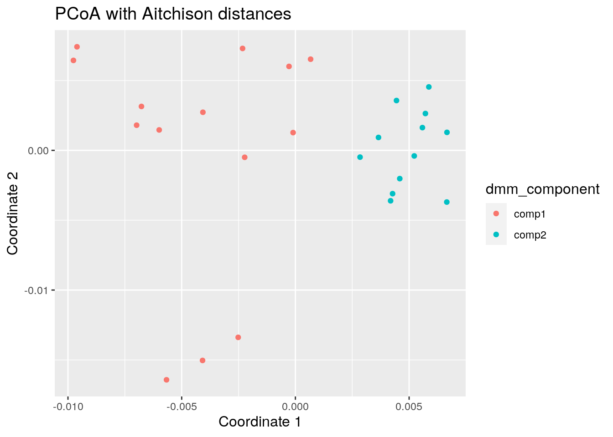

Chapter 6 Microbiome Community
## Loading required package: ecodistlibrary(mia)
data("GlobalPatterns")
tse <- GlobalPatterns6.1 Community composition
Heatmaps
6.1.1 Composition barplot
A typical way to visualize microbiome composition is by using composition barplot. In the following, relative abundance is calculated and top 5 taxa is retrieved for the Phylum rank. Thereafter, the barplot is visualized ordering rank by abundance values and samples by “Bacteroidetes”:
library(miaViz)
# Computing relative abundance
tse <- relAbundanceCounts(tse)
# Getting top taxa on a Phylum level
tse_phylum <- agglomerateByRank(tse, rank ="Phylum", onRankOnly=TRUE)
top_taxa <- getTopTaxa(tse_phylum,top = 5, abund_values = "relabundance")
# Renaming the "Phylum" rank to keep only top taxa and the rest to "Other"
phylum_renamed <- lapply(rowData(tse)$Phylum,
function(x){if (x %in% top_taxa) {x} else {"Other"}})
rowData(tse)$Phylum <- as.character(phylum_renamed)
# Visualizing the composition barplot, with samples order by "Bacteroidetes"
plotAbundance(tse, abund_values="relabundance", rank = "Phylum",
order_rank_by="abund", order_sample_by = "Bacteroidetes")
6.2 Community typing
6.2.1 Dirichlet Multinomial Mixtures (DMM)
This section focus on DMM analysis.
One technique that allows to search for groups of samples that are similar to each other is the Dirichlet-Multinomial Mixture Model. In DMM, we first determine the number of clusters (k) that best fit the data (model evidence) using Laplace approximation. After fitting the model with k clusters, we obtain for each sample k probabilities that reflect the probability that a sample belongs to the given cluster.
Let’s cluster the data with DMM clustering.
# Runs model and calculates the most likely number of clusters from 1 to 7.
# Since this is a large dataset it takes long computational time.
# For this reason we use only a subset of the data; agglomerated by Phylum as a rank.
tse <- GlobalPatterns
tse <- agglomerateByRank(tse, rank = "Phylum", agglomerateTree=TRUE)
tse_dmn <- runDMN(tse, name = "DMN", k = 1:7)# It is stored in metadata
tse_dmn## class: TreeSummarizedExperiment
## dim: 67 26
## metadata(1): DMN
## assays(1): counts
## rownames(67): Phylum:Crenarchaeota Phylum:Euryarchaeota ...
## Phylum:Synergistetes Phylum:SR1
## rowData names(7): Kingdom Phylum ... Genus Species
## colnames(26): CL3 CC1 ... Even2 Even3
## colData names(7): X.SampleID Primer ... SampleType Description
## reducedDimNames(0):
## mainExpName: NULL
## altExpNames(0):
## rowLinks: a LinkDataFrame (67 rows)
## rowTree: 1 phylo tree(s) (66 leaves)
## colLinks: NULL
## colTree: NULLReturn information on metadata that the object contains.
names(metadata(tse_dmn))## [1] "DMN"This returns a list of DMN objects for a closer investigation.
getDMN(tse_dmn)## [[1]]
## class: DMN
## k: 1
## samples x taxa: 26 x 67
## Laplace: 7715 BIC: 7802 AIC: 7760
##
## [[2]]
## class: DMN
## k: 2
## samples x taxa: 26 x 67
## Laplace: 7673 BIC: 7927 AIC: 7842
##
## [[3]]
## class: DMN
## k: 3
## samples x taxa: 26 x 67
## Laplace: 7690 BIC: 8076 AIC: 7948
##
## [[4]]
## class: DMN
## k: 4
## samples x taxa: 26 x 67
## Laplace: 7741 BIC: 8282 AIC: 8112
##
## [[5]]
## class: DMN
## k: 5
## samples x taxa: 26 x 67
## Laplace: 7859 BIC: 8604 AIC: 8391
##
## [[6]]
## class: DMN
## k: 6
## samples x taxa: 26 x 67
## Laplace: 7953 BIC: 8850 AIC: 8594
##
## [[7]]
## class: DMN
## k: 7
## samples x taxa: 26 x 67
## Laplace: 8064 BIC: 9086 AIC: 8787Show Laplace approximation (model evidence) for each model of the k models.
library(miaViz)
plotDMNFit(tse_dmn, type = "laplace")
Return the model that has the best fit.
getBestDMNFit(tse_dmn, type = "laplace")## class: DMN
## k: 2
## samples x taxa: 26 x 67
## Laplace: 7673 BIC: 7927 AIC: 78426.2.2 PCoA for ASV-level data with Bray-Curtis; with DMM clusters shown with colors
Group samples and return DMNGroup object that contains a summary. Patient status is used for grouping.
dmn_group <- calculateDMNgroup(tse_dmn, variable = "SampleType", exprs_values = "counts",
k = 2, seed=.Machine$integer.max)
dmn_group## class: DMNGroup
## summary:
## k samples taxa NLE LogDet Laplace BIC AIC
## Feces 2 4 67 1078.3 -106.19 901.1 1171.9 1213
## Freshwater 2 2 67 889.6 -97.28 716.9 936.4 1025
## Freshwater (creek) 2 3 67 1600.3 860.08 1906.3 1674.5 1735
## Mock 2 3 67 1008.4 -55.37 856.6 1082.5 1143
## Ocean 2 3 67 1096.7 -56.21 944.6 1170.9 1232
## Sediment (estuary) 2 3 67 1195.5 18.63 1080.8 1269.7 1331
## Skin 2 3 67 992.6 -84.81 826.2 1066.8 1128
## Soil 2 3 67 1380.3 11.21 1261.8 1454.5 1515
## Tongue 2 2 67 783.0 -107.74 605.1 829.8 918Mixture weights (rough measure of the cluster size).
DirichletMultinomial::mixturewt(getBestDMNFit(tse_dmn))## pi theta
## 1 0.5385 20.58
## 2 0.4615 15.32Samples-cluster assignment probabilities / how probable it is that sample belongs to each cluster
head(DirichletMultinomial::mixture(getBestDMNFit(tse_dmn)))## [,1] [,2]
## CL3 1.000e+00 4.479e-17
## CC1 1.000e+00 3.380e-22
## SV1 1.000e+00 1.707e-12
## M31Fcsw 7.424e-26 1.000e+00
## M11Fcsw 1.092e-16 1.000e+00
## M31Plmr 1.150e-13 1.000e+00Contribution of each taxa to each component
head(DirichletMultinomial::fitted(getBestDMNFit(tse_dmn)))## [,1] [,2]
## Phylum:Crenarchaeota 0.30382 0.1354082
## Phylum:Euryarchaeota 0.23115 0.1468929
## Phylum:Actinobacteria 1.21356 1.0581486
## Phylum:Spirochaetes 0.21393 0.1318099
## Phylum:MVP-15 0.02982 0.0007646
## Phylum:Proteobacteria 6.84509 1.8115328Get the assignment probabilities
prob <- DirichletMultinomial::mixture(getBestDMNFit(tse_dmn))
# Add column names
colnames(prob) <- c("comp1", "comp2")
# For each row, finds column that has the highest value. Then extract the column
# names of highest values.
vec <- colnames(prob)[max.col(prob,ties.method = "first")]Computing the euclidean PCoA and storing it as a dataframe
# Does clr transformation. Pseudocount is added, because data contains zeros.
tse <- transformCounts(tse, method = "clr", pseudocount = 1)
# Gets clr table
clr_assay <- assays(tse)$clr
# Transposes it to get taxa to columns
clr_assay <- t(clr_assay)
# Calculates Euclidean distances between samples. Because taxa is in columns,
# it is used to compare different samples.
euclidean_dist <- vegan::vegdist(clr_assay, method = "euclidean")
# Does principal coordinate analysis
euclidean_pcoa <- ecodist::pco(euclidean_dist)
# Creates a data frame from principal coordinates
euclidean_pcoa_df <- data.frame(pcoa1 = euclidean_pcoa$vectors[,1],
pcoa2 = euclidean_pcoa$vectors[,2])# Creates a data frame that contains principal coordinates and DMM information
euclidean_dmm_pcoa_df <- cbind(euclidean_pcoa_df,
dmm_component = vec)
# Creates a plot
euclidean_dmm_plot <- ggplot(data = euclidean_dmm_pcoa_df,
aes(x=pcoa1, y=pcoa2,
color = dmm_component)) +
geom_point() +
labs(x = "Coordinate 1",
y = "Coordinate 2",
title = "PCoA with Aitchison distances") +
theme(title = element_text(size = 12)) # makes titles smaller
euclidean_dmm_plot
Session Info
R version 4.1.0 (2021-05-18)
Platform: x86_64-pc-linux-gnu (64-bit)
Running under: Ubuntu 20.04.2 LTS
Matrix products: default
BLAS/LAPACK: /usr/lib/x86_64-linux-gnu/openblas-pthread/libopenblasp-r0.3.8.so
locale:
[1] LC_CTYPE=en_US.UTF-8 LC_NUMERIC=C
[3] LC_TIME=en_US.UTF-8 LC_COLLATE=en_US.UTF-8
[5] LC_MONETARY=en_US.UTF-8 LC_MESSAGES=C
[7] LC_PAPER=en_US.UTF-8 LC_NAME=C
[9] LC_ADDRESS=C LC_TELEPHONE=C
[11] LC_MEASUREMENT=en_US.UTF-8 LC_IDENTIFICATION=C
attached base packages:
[1] stats4 stats graphics grDevices utils datasets methods
[8] base
other attached packages:
[1] miaViz_1.1.2 ggraph_2.0.5
[3] ggplot2_3.3.5 mia_1.1.7
[5] TreeSummarizedExperiment_2.1.3 Biostrings_2.61.1
[7] XVector_0.33.0 SingleCellExperiment_1.15.1
[9] SummarizedExperiment_1.23.1 Biobase_2.53.0
[11] GenomicRanges_1.45.0 GenomeInfoDb_1.29.3
[13] IRanges_2.27.0 S4Vectors_0.31.0
[15] BiocGenerics_0.39.1 MatrixGenerics_1.5.1
[17] matrixStats_0.59.0 ecodist_2.0.7
[19] BiocStyle_2.21.3 rebook_1.3.0
loaded via a namespace (and not attached):
[1] ggtree_3.1.2 ggnewscale_0.4.5
[3] ggbeeswarm_0.6.0 colorspace_2.0-2
[5] ellipsis_0.3.2 scuttle_1.3.0
[7] BiocNeighbors_1.11.0 aplot_0.0.6
[9] farver_2.1.0 graphlayouts_0.7.1
[11] ggrepel_0.9.1 bit64_4.0.5
[13] fansi_0.5.0 decontam_1.13.0
[15] splines_4.1.0 codetools_0.2-18
[17] sparseMatrixStats_1.5.0 cachem_1.0.5
[19] knitr_1.33 scater_1.21.2
[21] polyclip_1.10-0 jsonlite_1.7.2
[23] cluster_2.1.2 graph_1.71.2
[25] ggforce_0.3.3 BiocManager_1.30.16
[27] compiler_4.1.0 rvcheck_0.1.8
[29] assertthat_0.2.1 Matrix_1.3-4
[31] fastmap_1.1.0 lazyeval_0.2.2
[33] tweenr_1.0.2 BiocSingular_1.9.1
[35] htmltools_0.5.1.1 tools_4.1.0
[37] igraph_1.2.6 rsvd_1.0.5
[39] gtable_0.3.0 glue_1.4.2
[41] GenomeInfoDbData_1.2.6 reshape2_1.4.4
[43] dplyr_1.0.7 Rcpp_1.0.7
[45] jquerylib_0.1.4 vctrs_0.3.8
[47] ape_5.5 nlme_3.1-152
[49] DECIPHER_2.21.0 DelayedMatrixStats_1.15.0
[51] xfun_0.24 stringr_1.4.0
[53] beachmat_2.9.0 lifecycle_1.0.0
[55] irlba_2.3.3 XML_3.99-0.6
[57] zlibbioc_1.39.0 MASS_7.3-54
[59] scales_1.1.1 tidygraph_1.2.0
[61] parallel_4.1.0 yaml_2.2.1
[63] memoise_2.0.0 gridExtra_2.3
[65] sass_0.4.0 stringi_1.7.3
[67] RSQLite_2.2.7 highr_0.9
[69] ScaledMatrix_1.1.0 permute_0.9-5
[71] tidytree_0.3.4 filelock_1.0.2
[73] BiocParallel_1.27.2 rlang_0.4.11
[75] pkgconfig_2.0.3 bitops_1.0-7
[77] evaluate_0.14 lattice_0.20-44
[79] purrr_0.3.4 labeling_0.4.2
[81] patchwork_1.1.1 treeio_1.17.2
[83] CodeDepends_0.6.5 bit_4.0.4
[85] tidyselect_1.1.1 plyr_1.8.6
[87] magrittr_2.0.1 bookdown_0.22
[89] R6_2.5.0 generics_0.1.0
[91] DelayedArray_0.19.1 DBI_1.1.1
[93] withr_2.4.2 mgcv_1.8-36
[95] pillar_1.6.1 RCurl_1.98-1.3
[97] tibble_3.1.2 dir.expiry_1.1.0
[99] crayon_1.4.1 utf8_1.2.1
[101] rmarkdown_2.9 viridis_0.6.1
[103] grid_4.1.0 blob_1.2.1
[105] vegan_2.5-7 digest_0.6.27
[107] tidyr_1.1.3 munsell_0.5.0
[109] DirichletMultinomial_1.35.0 beeswarm_0.4.0
[111] viridisLite_0.4.0 vipor_0.4.5
[113] bslib_0.2.5.1